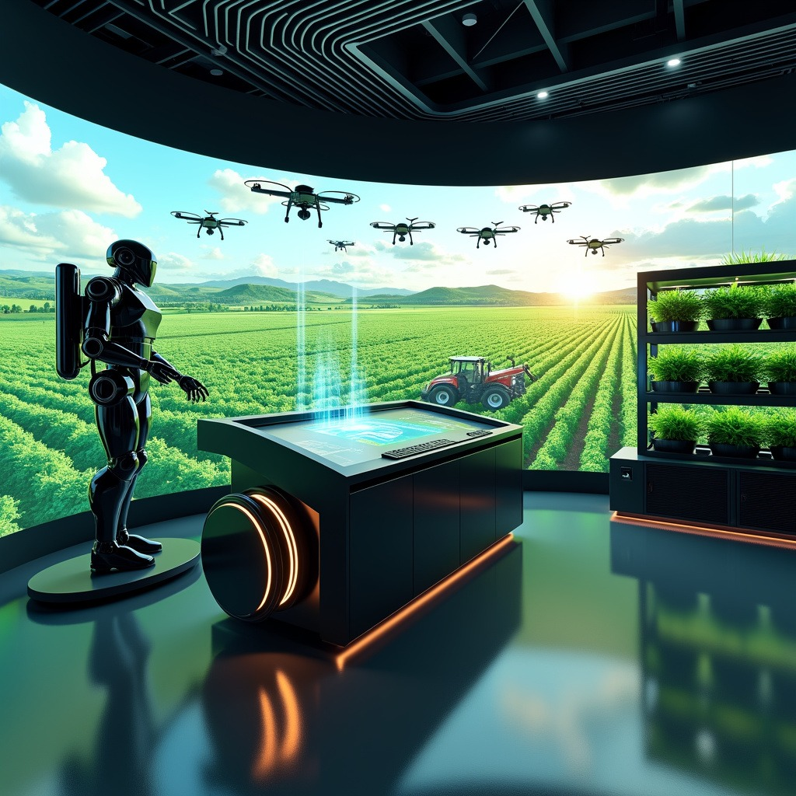
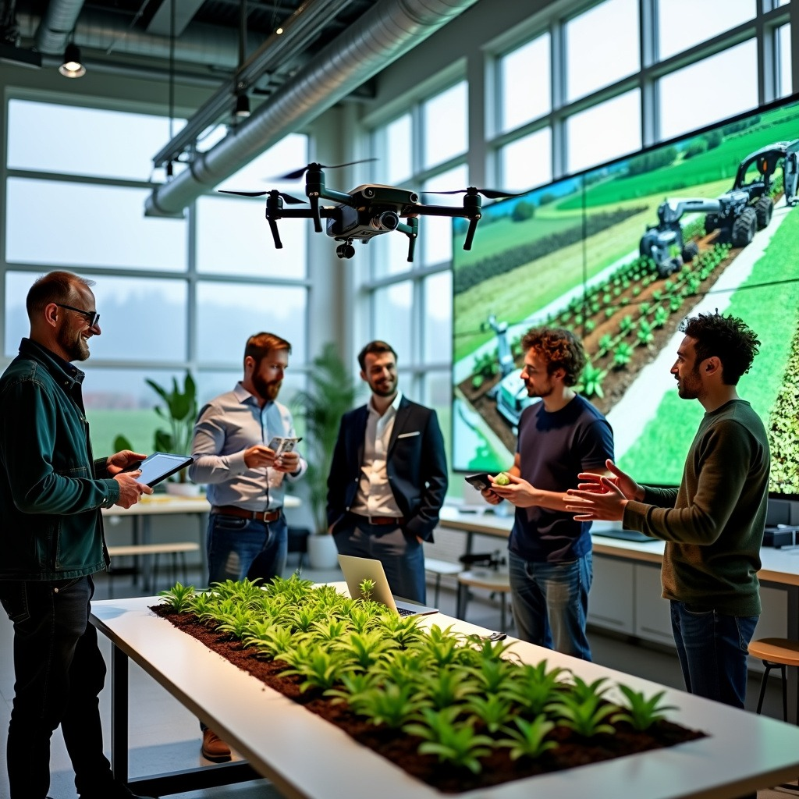

Com essa funcionalidade, gestores podem planejar a compra de insumos, calcular a quantidade ideal e definir os melhores momentos para plantar e vender. Usando algoritmos de previsão de mercado e análise de dados, o sistema otimiza a produção, reduz custos e maximiza lucros.
Saiba Mais

Essa funcionalidade usa dados climáticos e de mercado para oferecer recomendações sobre os melhores períodos para plantar e colher. O sistema analisa tendências e padrões históricos para fazer previsões que auxiliam na tomada de decisões.
Saiba Mais
Após a colheita, o software facilita a conexão entre produtores e parceiros para o reaproveitamento de alimentos não comercializados. Esses produtos podem ser transformados em ração animal ou outros itens, promovendo a economia circular.
Saiba Mais

Uma interface digital que conecta produtores diretamente a compradores interessados, simplificando o processo de venda. Os produtores podem listar seus produtos, negociar e fechar negócios diretamente na plataforma.
Saiba Mais